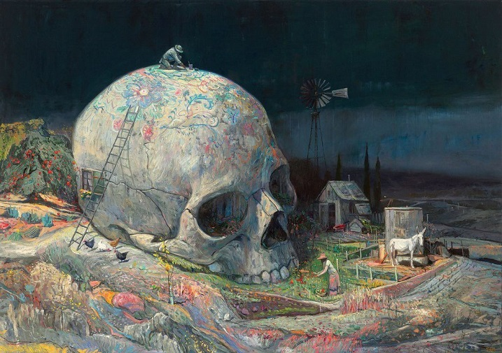
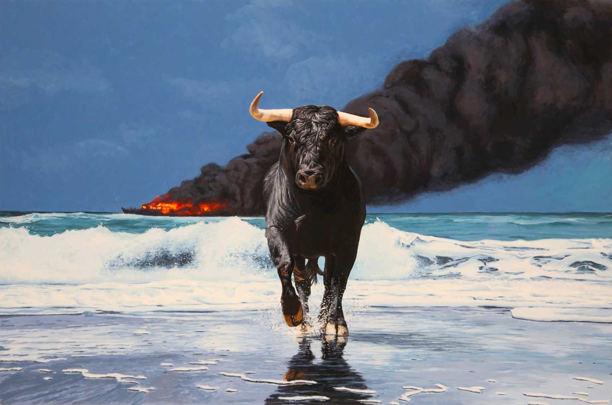
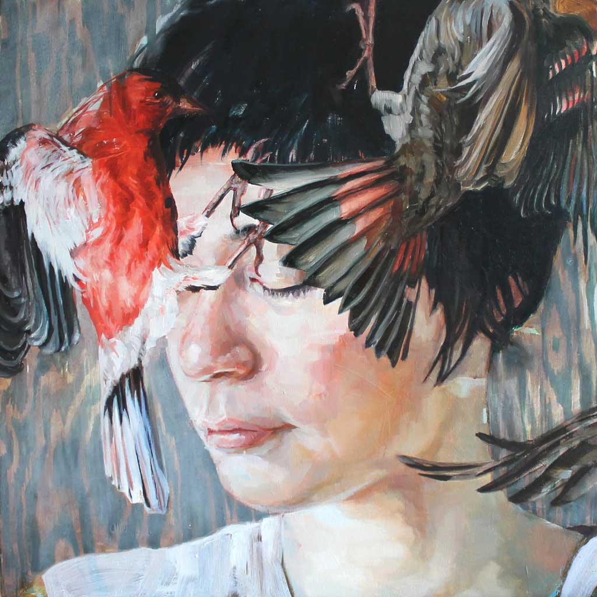

Shaun Tan
I chose Shaun Tan as my artist model because I liked the way he used the texture of his brush in his paintings, he barely ever has flat colours there are always variations in his colour.
Josh Keyes
I chose Josh Keyes as my second artist model because of his realistic style, his use of main central subjects in his paintings, and mainly his interesting subject matter.
Meghan Howland
Meghan Howland is my third artist model for similar reasons to Shaun Tan, her use of texture and colour variation and contrast.
